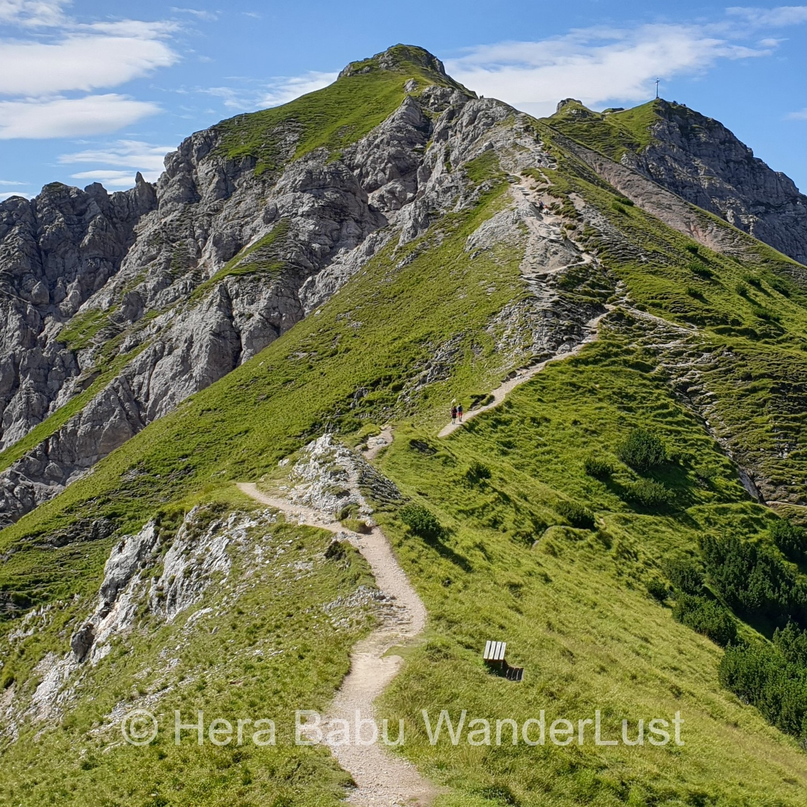
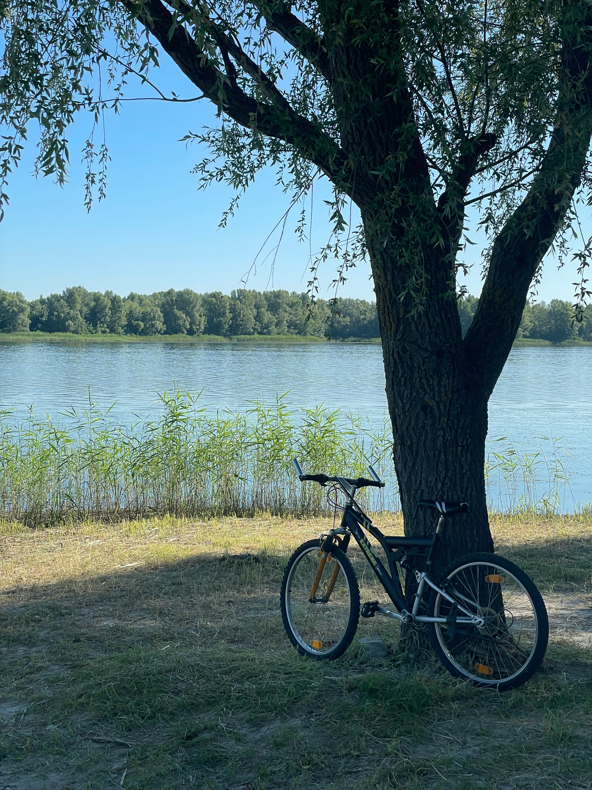

Things I Enjoy

Curious by nature, I enjoy diving into design trends and tech tutorials — learning never stops, and I’m always looking to grow.

Whether it’s a quiet forest trail or a steep climb, hiking keeps me grounded.

Baking is a creative outlet I turn to after hours — a blend of precision and joy.

Biking around the beautiful lakes of Bayern — peaceful views with every turn.

Knitting when the weather keeps me indoors – a cozy way to stay creative.

Reading stories with my little one keeps my imagination active.